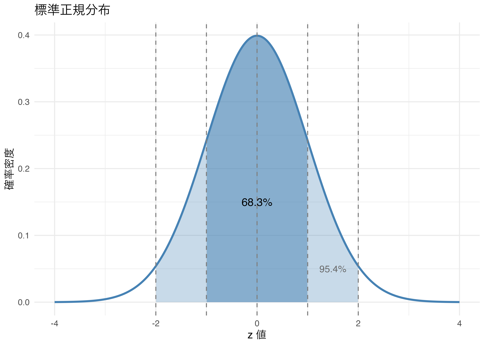
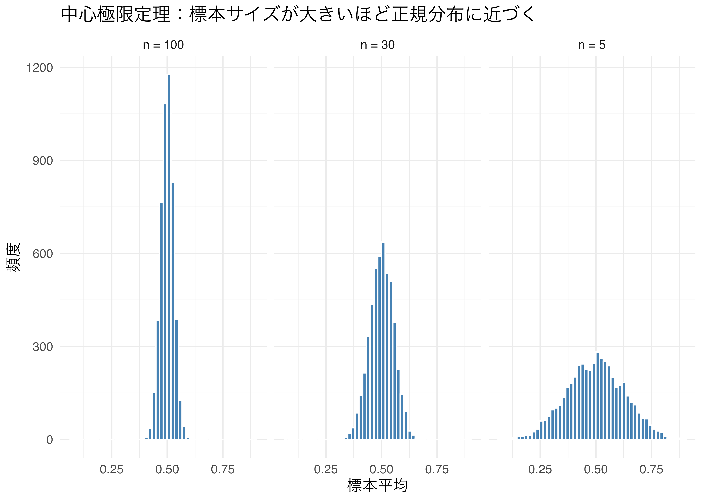
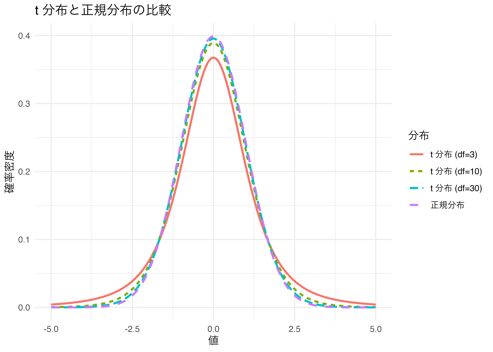
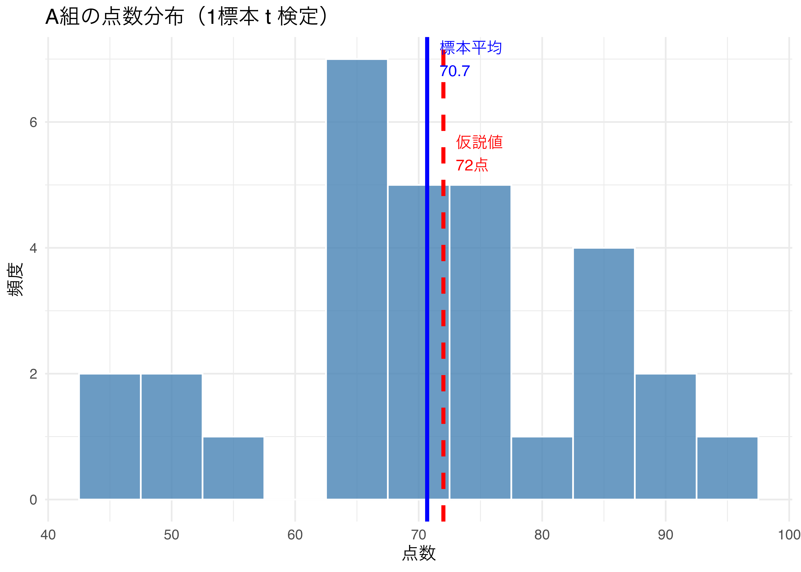
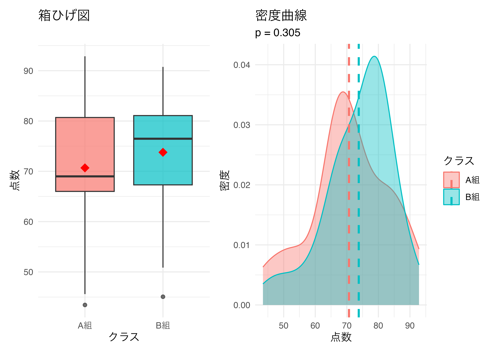
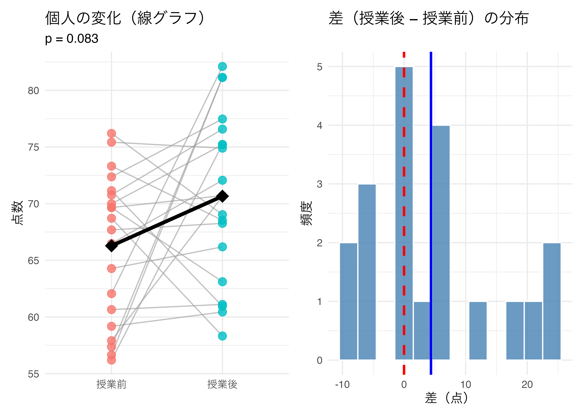
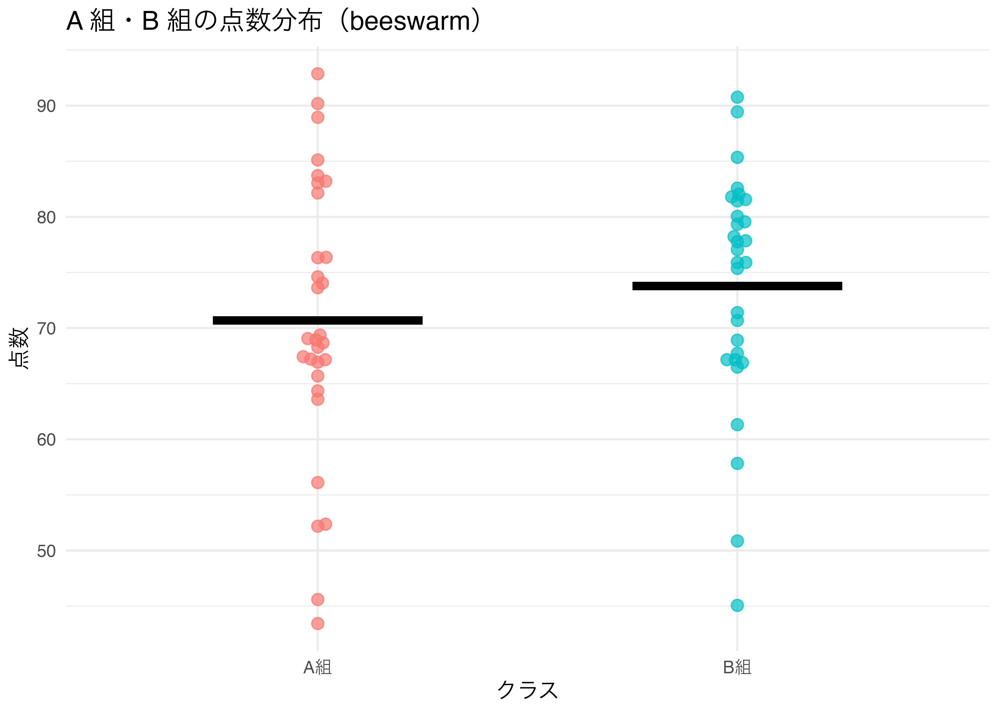
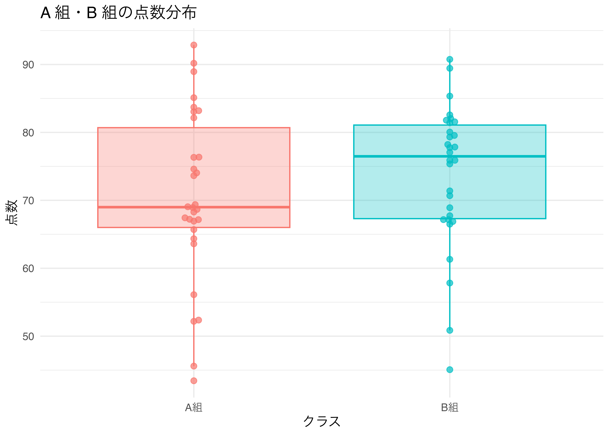
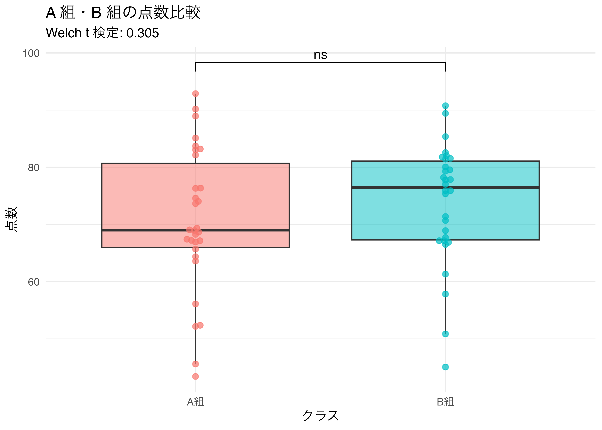

7 t 検定
平均値の差を統計的に検定する
今日の目標
- t 検定の考え方（背景知識）を理解する。
- R を使って 1 標本の t 検定・対応なし t 検定・対応あり t 検定を実行できるようになる。
- 検定結果をグラフで適切に可視化できるようになる。
- （応用）
ggbeeswarmとggsignifを使って視覚的に豊かなグラフを描けるようになる。
7.1 パッケージの準備
大学の PC はシャットダウンするたびに初期化されるため、毎回インストールが必要です。
7.2 背景知識（読み物）
このセクションについて
このセクションは読み物です。 t 検定の理論的背景（z 検定・正規分布・中心極限定理・t 分布）を解説しています。 講義では飛ばして次のセクション（Section 7.3）から始めることがあります。
z 検定と t 検定の関係
z 検定は正規分布を用いる統計的検定法ですが、以下の前提条件が必要です。
- 母集団の平均と標準偏差が既知であること
- 標本は母集団からの単純ランダム標本であること
- 母集団が正規分布に従うこと
現実には「母集団の標準偏差が既知」という条件はほとんど満たされません。 そこで代わりに使われるのが t 検定（スチューデントの t 検定）です。
t 検定の歴史
t 検定を考案したのは William Sealy Gosset（ギネスビール社員）です。 「標本サイズが小さくても」、母集団からの標本における標準誤差の分布は \((n-1)\) の自由度で t 分布することを発見しました。 論文は Student というペンネームで投稿したため、Student’s t 検定と呼ばれます。
標準正規分布と z 値
標準化（Standardization）とは、データを「平均 0・標準偏差 1」の分布に変換することです。
\[z = \frac{x - \bar{x}}{s}\]
標準化後の分布（標準正規分布）の特徴は以下の通りです。
| 特徴 | 値 |
|---|---|
| 平均 | 0 |
| 標準偏差 | 1 |
| 平均 ± 1σ の範囲 | 全データの約 68.3% |
| 平均 ± 2σ の範囲 | 全データの約 95.4% |
| 平均 ± 3σ の範囲 | 全データの約 99.7% |
tibble(x = seq(-4, 4, length.out = 400)) |>
mutate(y = dnorm(x)) |>
ggplot(aes(x = x, y = y)) +
# ±2σ の塗りつぶし（薄い青）
geom_area(data = ~ filter(.x, x >= -2 & x <= 2),
fill = "steelblue", alpha = 0.3) +
# ±1σ の塗りつぶし（濃い青）
geom_area(data = ~ filter(.x, x >= -1 & x <= 1),
fill = "steelblue", alpha = 0.5) +
geom_line(color = "steelblue", linewidth = 1) +
geom_vline(xintercept = c(-2, -1, 0, 1, 2),
linetype = "dashed", color = "gray50") +
annotate("text", x = 0, y = 0.15, label = "68.3%", size = 4) +
annotate("text", x = 1.5, y = 0.05, label = "95.4%", size = 3.5, color = "gray40") +
labs(
title = "標準正規分布",
x = "z 値",
y = "確率密度"
) +
theme_minimal()
中心極限定理
中心極限定理（Central Limit Theorem）とは、 「母集団がどんな分布であっても、標本サイズが十分に大きければ、 標本平均の分布は正規分布に近づく」という定理です。
これにより、母集団が正規分布でなくても、標本平均を使った推測が可能になります。
set.seed(42)
n_sim <- 5000 # シミュレーション回数
# 一様分布 U(0,1) から n 個をサンプルして平均をとることを n_sim 回繰り返す
sim_means <- tibble(
n5 = replicate(n_sim, mean(runif(5))), # n = 5
n30 = replicate(n_sim, mean(runif(30))), # n = 30
n100 = replicate(n_sim, mean(runif(100))) # n = 100
) |>
pivot_longer(everything(), names_to = "sample_size", values_to = "mean")
ggplot(data = sim_means, aes(x = mean)) +
geom_histogram(bins = 50, fill = "steelblue", color = "white") +
facet_wrap(~ sample_size,
labeller = labeller(sample_size = c(
n5 = "n = 5", n30 = "n = 30", n100 = "n = 100"))) +
labs(
title = "中心極限定理：標本サイズが大きいほど正規分布に近づく",
x = "標本平均",
y = "頻度"
) +
theme_minimal()
t 分布
t 分布は正規分布に似た釣り鐘型ですが、自由度（= 標本サイズ - 1）によって形が変わります。 標本サイズが小さいほど裾が厚く（外れ値が出やすい）、大きくなるにつれ正規分布に近づきます。
tibble(x = seq(-5, 5, length.out = 400)) |>
mutate(
normal = dnorm(x),
t3 = dt(x, df = 3),
t10 = dt(x, df = 10),
t30 = dt(x, df = 30)
) |>
pivot_longer(-x, names_to = "distribution", values_to = "density") |>
mutate(distribution = factor(distribution,
levels = c("t3", "t10", "t30", "normal"),
labels = c("t 分布 (df=3)", "t 分布 (df=10)", "t 分布 (df=30)", "正規分布"))) |>
ggplot(aes(x = x, y = density, color = distribution, linetype = distribution)) +
geom_line(linewidth = 1) +
labs(
title = "t 分布と正規分布の比較",
x = "値",
y = "確率密度",
color = "分布",
linetype = "分布"
) +
theme_minimal()
7.3 t 検定の基礎
t 検定の種類
t 検定には大きく 3 種類あります。
| 種類 | 目的 | R の関数 |
|---|---|---|
| 1 標本の t 検定 | 標本平均が特定の値（仮説値）と異なるか検定 | t.test(x, mu = 値) |
| 対応なし t 検定 | 独立した 2 グループの平均値が異なるか検定 | t.test(x, y) または t.test(値 ~ グループ) |
| 対応あり t 検定 | 同じ対象の「前後」など対になったデータの平均差を検定 | t.test(x, y, paired = TRUE) |
仮説検定の考え方
t 検定は仮説検定の枠組みで行います。
| 用語 | 内容 | 例 |
|---|---|---|
| 帰無仮説 H₀ | 「差がない」という仮説 | グループ A と B の平均は等しい |
| 対立仮説 H₁ | 「差がある」という仮説 | グループ A と B の平均は異なる |
| p 値 | 帰無仮説が正しいとした場合に、このような結果が得られる確率 | p = 0.03 |
| 有意水準 α | 帰無仮説を棄却する基準（通常 0.05） | α = 0.05 |
判断ルール：
- p 値 < 0.05（有意水準）→ 帰無仮説を棄却（「差がある」と判断）
- p 値 ≥ 0.05 → 帰無仮説を棄却できない（「差があるとは言えない」）
「差がない」と「差があるとは言えない」は違う
p 値 ≥ 0.05 は「差がない」ことを証明するのではなく、 「この標本データからは差を検出できなかった」という意味です。
データの準備
以下の解説で使う架空データを準備します。
set.seed(42)
# 架空のテスト点数データ（2クラス）
df_score <- tibble(
student_id = 1:60,
class = rep(c("A組", "B組"), each = 30),
score = c(
rnorm(30, mean = 70, sd = 10), # A組：平均70点
rnorm(30, mean = 75, sd = 10) # B組：平均75点
)
)
# 架空の「授業前後」のテスト点数データ（対応あり）
df_before_after <- tibble(
student_id = 1:20,
before = rnorm(20, mean = 65, sd = 8), # 授業前
after = rnorm(20, mean = 70, sd = 8) # 授業後
)
glimpse(df_score)Rows: 60
Columns: 3
$ student_id <int> 1, 2, 3, 4, 5, 6, 7, 8, 9, 10, 11, 12, 13, 14, 15, 16, 17, …
$ class <chr> "A組", "A組", "A組", "A組", "A組", "A組", "A組", "A組", "A組", "A組",…
$ score <dbl> 83.70958, 64.35302, 73.63128, 76.32863, 74.04268, 68.93875,…7.4 1 標本の t 検定
目的
「この標本の平均値は、仮説で設定した値（母平均）と統計的に異なるか？」を検定します。
例：A 組の平均点は 72 点と異なるか？
- 1
-
mu = 72で仮説値（検定したい母平均）を指定
One Sample t-test
data: score_A
t = -0.57352, df = 29, p-value = 0.5707
alternative hypothesis: true mean is not equal to 72
95 percent confidence interval:
65.99952 75.37222
sample estimates:
mean of x
70.68587 broom::tidy() で結果を整然データに変換する
- 1
-
tidy()で結果をデータフレームに変換。estimate（標本平均）、statistic（t 値）、p.value（p 値）、conf.low・conf.high（95% 信頼区間）が確認できる
# A tibble: 1 × 8
estimate statistic p.value parameter conf.low conf.high method alternative
<dbl> <dbl> <dbl> <dbl> <dbl> <dbl> <chr> <chr>
1 70.7 -0.574 0.571 29 66.0 75.4 One Sampl… two.sided 出力の読み方
| 出力 | 意味 |
|---|---|
estimate |
標本平均 |
statistic |
t 値（検定統計量） |
p.value |
p 値（0.05 未満なら有意） |
conf.low, conf.high |
95% 信頼区間の下限・上限 |
parameter |
自由度（= n - 1） |
method |
検定の種類 |
可視化：標本平均と仮説値の比較
df_score |>
filter(class == "A組") |>
ggplot(aes(x = score)) +
geom_histogram(binwidth = 5, fill = "steelblue",
color = "white", alpha = 0.8) +
geom_vline(xintercept = mean(score_A),
color = "blue", linewidth = 1.2, linetype = "solid") +
geom_vline(xintercept = 72,
color = "red", linewidth = 1.2, linetype = "dashed") +
annotate("text", x = mean(score_A) + 1, y = 7,
label = paste0("標本平均\n", round(mean(score_A), 1)),
hjust = 0, color = "blue", size = 3.5) +
annotate("text", x = 72 + 1, y = 5.5,
label = "仮説値\n72点", hjust = 0, color = "red", size = 3.5) +
labs(
title = "A組の点数分布（1標本 t 検定）",
x = "点数",
y = "頻度"
) +
theme_minimal()
7.5 対応なし t 検定
目的
独立した 2 つのグループの平均値が統計的に異なるかを検定します。
例：A 組と B 組の平均点は異なるか？
- 1
-
値 ~ グループ変数の式形式で書くと、データフレームから直接指定できる
Welch Two Sample t-test
data: score by class
t = -1.036, df = 56.249, p-value = 0.3047
alternative hypothesis: true difference in means between group A組 and group B組 is not equal to 0
95 percent confidence interval:
-9.079331 2.889238
sample estimates:
mean in group A組 mean in group B組
70.68587 73.78091 # A tibble: 1 × 10
estimate estimate1 estimate2 statistic p.value parameter conf.low conf.high
<dbl> <dbl> <dbl> <dbl> <dbl> <dbl> <dbl> <dbl>
1 -3.10 70.7 73.8 -1.04 0.305 56.2 -9.08 2.89
# ℹ 2 more variables: method <chr>, alternative <chr>等分散の仮定について
t.test() のデフォルトは var.equal = FALSE（Welch の t 検定）です。 Welch の t 検定は 2 グループの分散が等しくない場合でも使えるため、 現在では等分散の仮定を置かない Welch の t 検定が標準的です。
可視化：2 グループの分布比較
# p 値を取得してラベル用文字列を作成
p_val <- result2 |> tidy() |> pull(p.value)
p_label <- if_else(p_val < 0.001, "p < 0.001",
paste0("p = ", round(p_val, 3)))
# グループ別の平均値
means <- df_score |>
group_by(class) |>
summarise(mean_score = mean(score), .groups = "drop")
# 箱ひげ図 + 平均値
p1 <- ggplot(df_score, aes(x = class, y = score, fill = class)) +
geom_boxplot(alpha = 0.7) +
stat_summary(fun = mean, geom = "point",
shape = 18, size = 4, color = "red") +
labs(title = "箱ひげ図", x = "クラス", y = "点数") +
theme_minimal() +
theme(legend.position = "none")
# 密度曲線
p2 <- ggplot(df_score, aes(x = score, fill = class, color = class)) +
geom_density(alpha = 0.4) +
geom_vline(data = means,
aes(xintercept = mean_score, color = class),
linetype = "dashed", linewidth = 1) +
labs(title = "密度曲線",
subtitle = p_label,
x = "点数", y = "密度",
fill = "クラス", color = "クラス") +
theme_minimal()
p1 + p2
7.6 対応あり t 検定
目的
同一の対象に対して「前・後」や「介入あり・なし」のように 対になったデータの平均差を検定します。
例：授業の前後でテスト点数は向上したか？
- 1
-
after - beforeの差を検定したい場合、afterを先に書く - 2
-
paired = TRUEで対応あり t 検定になる
Paired t-test
data: df_before_after$after and df_before_after$before
t = 1.8328, df = 19, p-value = 0.08254
alternative hypothesis: true mean difference is not equal to 0
95 percent confidence interval:
-0.6204438 9.3621261
sample estimates:
mean difference
4.370841 # A tibble: 1 × 8
estimate statistic p.value parameter conf.low conf.high method alternative
<dbl> <dbl> <dbl> <dbl> <dbl> <dbl> <chr> <chr>
1 4.37 1.83 0.0825 19 -0.620 9.36 Paired t-… two.sided 可視化：前後の変化を個人レベルで可視化する
# wide → long 変換
df_long <- df_before_after |>
pivot_longer(cols = c(before, after),
names_to = "timing",
values_to = "score") |>
mutate(timing = factor(timing,
levels = c("before", "after"),
labels = c("授業前", "授業後")))
# p 値ラベル
p_val_p <- result3 |> tidy() |> pull(p.value)
p_label_p <- if_else(p_val_p < 0.001, "p < 0.001",
paste0("p = ", round(p_val_p, 3)))
# 個人の変化を線で結ぶ
p1 <- ggplot(df_long, aes(x = timing, y = score)) +
geom_line(aes(group = student_id),
color = "gray60", alpha = 0.6) +
geom_point(aes(color = timing), size = 3, alpha = 0.8) +
stat_summary(fun = mean, geom = "point",
shape = 18, size = 5, color = "black") +
stat_summary(fun = mean, geom = "line",
aes(group = 1), color = "black",
linewidth = 1.5) +
labs(title = "個人の変化（線グラフ）",
subtitle = p_label_p,
x = "", y = "点数") +
theme_minimal() +
theme(legend.position = "none")
# 差（after - before）の分布
df_diff <- df_before_after |>
mutate(diff = after - before)
p2 <- ggplot(df_diff, aes(x = diff)) +
geom_histogram(binwidth = 3, fill = "steelblue",
color = "white", alpha = 0.8) +
geom_vline(xintercept = 0, color = "red",
linetype = "dashed", linewidth = 1) +
geom_vline(xintercept = mean(df_diff$diff),
color = "blue", linewidth = 1) +
labs(title = "差（授業後 − 授業前）の分布",
x = "差（点）", y = "頻度") +
theme_minimal()
p1 + p2- 1
-
geom_line(aes(group = student_id))で各学生の前後を線で結ぶ

7.7 応用：ggbeeswarm と ggsignif
このセクションについて
ggbeeswarm（点のばらつきを美しく表示）と ggsignif（有意差ブラケット）を使って、 論文・レポートで使えるクオリティのグラフを作成します。
ggbeeswarm で点のばらつきを表示する
geom_jitter() と似ていますが、geom_beeswarm() はアルゴリズムで点が重ならないよう 自動配置されるため、より整然としたグラフになります。
ggplot(df_score, aes(x = class, y = score, color = class)) +
geom_beeswarm(size = 2.5, alpha = 0.7) +
stat_summary(fun = mean, geom = "crossbar",
width = 0.5, color = "black", linewidth = 0.8) +
labs(
title = "A 組・B 組の点数分布（beeswarm）",
x = "クラス", y = "点数"
) +
theme_minimal() +
theme(legend.position = "none")- 1
-
geom_beeswarm()で点を重ならないように自動配置 - 2
-
stat_summary(geom = "crossbar")で平均値を横棒で表示

箱ひげ図と beeswarm を重ねる
- 1
-
outlier.shape = NAで箱ひげ図の外れ値点を非表示にする（beeswarm と重複するため）

ggsignif で有意差ブラケットを追加する
geom_signif() を追加するだけで、グラフに有意差ブラケット（significance bracket）を表示できます。
# p 値を取得
p_two <- result2 |> tidy() |> pull(p.value)
ggplot(df_score, aes(x = class, y = score, fill = class)) +
geom_boxplot(alpha = 0.5, outlier.shape = NA) +
geom_beeswarm(aes(color = class), size = 2, alpha = 0.7) +
geom_signif(
comparisons = list(c("A組", "B組")),
annotations = if_else(p_two < 0.05, "*", "ns"),
map_signif_level = FALSE,
y_position = max(df_score$score) + 3
) +
labs(
title = "A 組・B 組の点数比較",
subtitle = paste0("Welch t 検定: ", round(p_two, 3)),
x = "クラス", y = "点数"
) +
theme_minimal() +
theme(legend.position = "none")- 1
-
geom_signif()で有意差ブラケットを追加 - 2
-
comparisonsで比較するグループのペアをリストで指定 - 3
- p 値に応じて「*」（有意）または「ns」（not significant）を表示

有意差の表記（慣例）
| 表記 | p 値の範囲 |
|---|---|
*** |
p < 0.001 |
** |
p < 0.01 |
* |
p < 0.05 |
ns |
p ≥ 0.05（not significant） |
ggsignif は map_signif_level = TRUE にすると自動でこの表記に変換してくれます。
7.8 演習問題
データの説明
今回の演習では、学生の試験成績データ（Students Performance in Exams）を使います。 アメリカの高校生1000人の数学・読解・ライティングのスコアと、性別・人種・家庭環境などの情報が含まれています。
ファイル名： StudentsPerformance.csv
| 変数名 | 内容 | 型 |
|---|---|---|
gender |
性別（female / male） |
カテゴリ |
race |
人種・民族グループ（group A〜group E） |
カテゴリ |
parent_education |
親の学歴 | カテゴリ |
lunch |
昼食の種類（standard / free/reduced） |
カテゴリ |
test_preparation |
試験準備コース受講有無（completed / none） |
カテゴリ |
math |
数学スコア（0〜100） | 数値 |
reading |
読解スコア（0〜100） | 数値 |
writing |
ライティングスコア（0〜100） | 数値 |
穴埋め問題（t 検定）
（穴埋め 1）1 標本の t 検定
女子学生（gender == "female"）の数学スコア（math）の平均が 65 点と統計的に異なるかを 1 標本の t 検定で検定してください。
ただし、以下の手順で実行してください。
filter()で女子学生のみ抽出し、pull(math)でベクトルを取り出すt.test(x, mu = 65)で検定するtidy()で結果を確認する- 結果を解釈する
（穴埋め 4）対応あり t 検定：数学スコアと読解スコアの差
同一の学生について、数学スコア（math）と読解スコア（reading）に 統計的な差があるかを対応あり t 検定で検定してください。
ただし、以下の手順で実行してください。
t.test(reading, math, paired = TRUE)で検定する （reading - mathの差を検定したい場合、readingを先に書く）tidy()で結果を確認する- 結果を解釈する
自由記述問題（t 検定）
（自由記述 1）昼食種別と数学スコア
昼食の種類（lunch）によって数学スコア（math）に統計的な差があるかを 対応なし t 検定で検定してください。
- 検定を実行し、
tidy()で結果を確認してください - p 値を確認して、有意かどうかを判断し解釈してください
（自由記述 2）性別とライティングスコア
性別（gender）によってライティングスコア（writing）に統計的な差があるかを 対応なし t 検定で検定し、結果を箱ひげ図と密度曲線で可視化してください。
patchworkを使って2つのグラフを横に並べてください- 箱ひげ図には
stat_summary()で平均値（赤◆）を追加してください
（自由記述 3）試験準備コースと数学スコア
試験準備コースの受講有無（test_preparation）によって 数学スコア（math）に統計的な差があるかを対応なし t 検定で検定し、 結果を解釈した後、可視化してください。
- 以下のグラフを
patchworkで横に並べてください- 左：箱ひげ図（
fill = test_preparation）、平均値（赤◆）を追加 - 右：密度曲線（
fill = test_preparation,alpha = 0.4）
- 左：箱ひげ図（
（自由記述 4）対応あり t 検定：読解スコアとライティングスコアの差
同一の学生について、読解スコア（reading）とライティングスコア（writing）に 統計的な差があるかを対応あり t 検定で検定し解釈してください。
さらに、差（writing - reading）の分布をヒストグラムで可視化し、 ゼロ（差なし）の位置に赤の破線を、平均差の位置に青の実線を追加してください。
応用問題（ggbeeswarm + ggsignif）
（応用 穴埋め）性別と数学スコアの可視化
性別（gender）と数学スコア（math）の関係を ggbeeswarm と ggsignif を使って可視化してください。
ただし、以下の条件を満たしてください。
- 対応なし t 検定を実行し、p 値を取得する（
result2を再利用してもよい） geom_boxplot(alpha = 0.3, outlier.shape = NA)で箱ひげ図を描くgeom_beeswarm()で点を重ねるgeom_signif()で有意差ブラケットを追加する- タイトル：「性別による数学スコアの比較」
- テーマ：
theme_minimal()、凡例非表示
# p 値を取得（穴埋め2で作成した result2 を再利用）
p_gender <- result2 |> tidy() |> pull(___)
# グラフ
ggplot(data = ___, aes(x = ___, y = ___, fill = ___)) +
geom_boxplot(alpha = ___, outlier.shape = ___) +
geom_beeswarm(aes(color = ___), size = 1.5, alpha = 0.5) +
geom_signif(
comparisons = list(c(___, ___)),
annotations = if_else(p_gender < 0.05, "*", "ns"),
map_signif_level = FALSE,
y_position = max(___$___) + 3
) +
labs(
title = ___,
subtitle = paste0("Welch t 検定: p = ", round(p_gender, 3)),
x = ___, y = ___
) +
theme_minimal() +
theme(legend.position = "none")（応用 自由記述）試験準備コースと読解スコアの可視化
試験準備コースの受講有無（test_preparation）と読解スコア（reading）の関係を ggbeeswarm と ggsignif を使って可視化してください。
- 対応なし t 検定を実行して p 値を取得してください（
result3を再利用してもよい） - 箱ひげ図 + beeswarm の組み合わせで描いてください
geom_signif()で有意差ブラケットを追加してください- タイトル：「試験準備コース受講有無による読解スコアの比較」
7.9 まとめ
本日学んだこと
t 検定の種類と使い分け
| 種類 | 使う場面 | R の書き方 |
|---|---|---|
| 1 標本の t 検定 | 標本平均を特定の値と比較 | t.test(x, mu = 値) |
| 対応なし t 検定 | 独立した 2 グループの比較 | t.test(値 ~ グループ, data = df) |
| 対応あり t 検定 | 同一対象の前後比較 | t.test(後, 前, paired = TRUE) |
t 検定の流れ
次回の予告
第 8 回では、相関分析を学習します。
- 相関係数（ピアソン・スピアマン）の計算
- 相関の可視化（散布図・相関行列）
- 相関の有意性検定